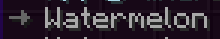
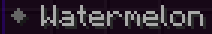
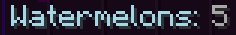
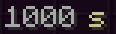
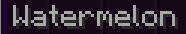
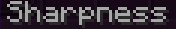
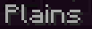

Tags
Rebar's language files make use of the MiniMessage format. MiniMessage has many tags already built in, but Rebar adds new tags on top of that.
See tutorial 3 for a much more in-depth explanation of tags and how to use them.
List of tags that Rebar adds
| Tag | Description | Example | Example result |
|---|---|---|---|
<arrow><arrow:[COLOR]> |
Inserts a right arrow (→) with the specified color (default: 0x666666) | <arrow> Watermelon |
 |
<guidearrow> |
Shorthand for <arrow:0x3a293>; used in the Rebar guide |
<guidearrow> Watermelon |
|
<diamond><diamond:[COLOR]> |
Inserts a diamond (◆) with the specified color (default: 0x666666) | <diamond> Watermelon |
 |
<star><star:[COLOR]> |
Inserts a star (★) with the specified color (default: NamedTextColor.BLUE) | <star> Watermelon |
|
<insn></insn> |
Applies a yellow styling (0xf9d104), used for instructions | <insn>Right click</insn> |
|
<guideinsn></guideinsn> |
Applies a purple styling (0xc907f4), used for guide instructions | <guideinsn>Right click</guideinsn> |
|
<attr></attr> |
Applies a cyan styling (0xa9d9e8), used for attributes | <attr>Watermelons:</attr> 5 |
 |
<unit:[unit]></unit><unit:[prefix]:[unit]></unit> |
Formats a constant number as a unit, with an optional metric prefix | <unit:seconds>1000</unit> |
 |
<nbsp></nbsp> |
Replaces spaces with non-breaking spaces, preventing line breaks | <nbsp>Watermelon</nbsp> |
 |
<item:[item_name]> |
Renders the translated name of a vanilla/rebar item | <item:pylon:bandage> |
|
<entity:[entity_type]> |
Renders the translated name of an entity type | <entity:creeper> |
|
<effect:[effect_type]> |
Renders the translated name of a potion effect | <effect:speed> |
|
<enchant:[enchant_name]> |
Renders the translated name of an enchantment | <enchant:sharpness> |
 |
<biome:[biome_name]> |
Renders the translated name of a biome | <biome:plains> |
 |